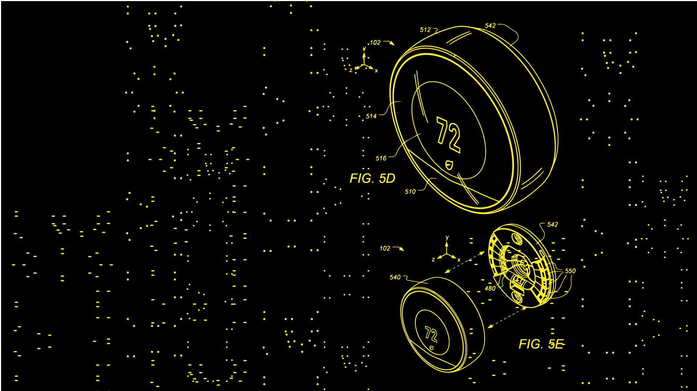

OCCUPANCY PATTERN DETECTION, ESTIMATION AND PREDICTION
Systems and methods are described for predicting and detecting occupancy of an enclosure
a priori stochastic model of occupancy patterns based on
information of the inclosure and the expected occupants
of the inclosure is used to pre-seed an occupancy prediction engine. Data from an occupancy sensor, the occupancy prediction engine predicts future occupancy of the enclosure.
predicts
predicts predicts predicts predicts predicts